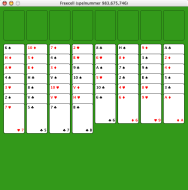

Freecell help
Freecell help
Wat is Freecell?
Freecell is een patience kaartspel van waaruit bijna elke beginsituatie gewonnen kan worden, als u het spel beheerst. Het speelveld bestaat uit vier vrije cellen (de 'Free Cells') linksboven, vier stapels (rechtsboven) en acht kolommen (onder).

Een geschud pak kaarten wordt verdeeld over de acht kolommen met de afbeelding naar boven. Uw doel is alle kaarten te verplaatsen naar de stapels. Deze stapels moeten in (de bekende) rangorde gelegd worden, beginnende bij de azen, dan de twee's, de drie's, enz.
Kaarten mogen -onder voorwaarde- verplaatst worden tussen kolommen. U kunt alleen een kaart op een andere leggen, als die ander een hogere plaats in de rangorde heeft en van een andere kleur is. U kunt bijvoorbeeld harten-vijf op een klaver-zes leggen.
Tenslotte, kaarten mogen verplaatst worden van en naar de vrije cellen linksboven. Elke vrije cel kan één kaart tegelijkertijd bevatten. Lege kolommen gedragen zich ook als cellen.